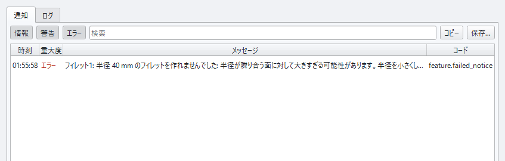
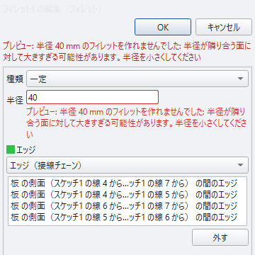
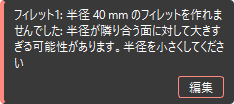
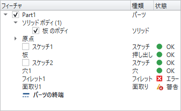
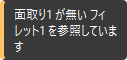
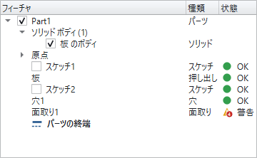
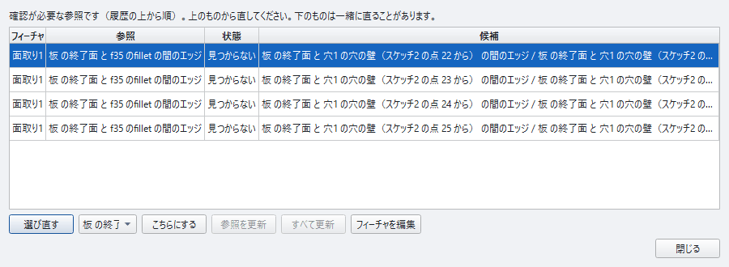
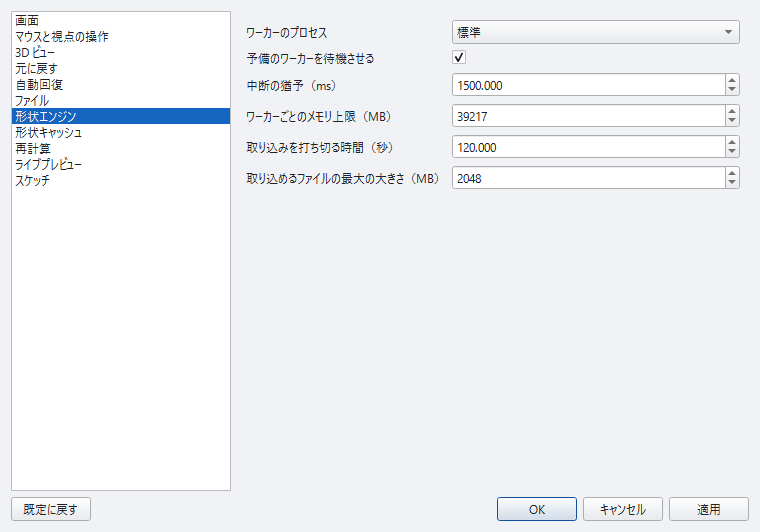
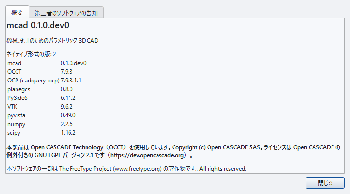

第 29 章
困ったとき
この章では、操作がうまくいかないときの確かめ方と直し方をまとめます。画面に出るエラーの文と対処、遅いとき、3D ビューが出ないとき、今の mcad でできないことを説明します。解決しないときのために、問い合わせの前に集める情報も説明します。
29.1 まず確かめること
知らせを読みます。エラーや警告は、ウィンドウの右下に数秒出ます。消えたあとも、ステータスバーのベルのボタンか、メニューの［ヘルプ］ → ［通知］で、履歴を読み返せます。
ブラウザの状態を見ます。フィーチャの［状態］が［OK］以外の行に、理由があります。行にマウスを置くと、ツールチップに理由が出ます。
元に戻します。直前の操作が原因なら、Ctrl+Z で戻して、値を変えてやり直します。
保存してから、試します。うまくいかない前に、Ctrl+S で保存しておきます。保存すると、前の版が
.bakに残ります。


知らせの履歴では、［情報］・［警告］・［エラー］のボタンで種類を絞り、検索欄で文字を探せます。［コピー］でクリップボードに、［保存］でテキスト ファイルに書き出せます。
29.2 フィーチャが失敗したとき
フィーチャの値が合わないと、そのフィーチャは［エラー］になります。失敗したフィーチャは形を変えず、その前の形が残ります。後ろのフィーチャは、その形に対して計算されます。失敗したフィーチャが作る面やエッジを使っていた後ろのフィーチャは、参照が見つからず、［警告］になります。［オプション］の［再計算］ページの［フィーチャが失敗したとき］を［止める］にすると、そこで計算を止めます。
値を入力している途中で失敗するときは、［プロパティ］パネルの上と、欄の下に、理由が赤い文で出ます。ビューにはプレビューが出ません。選んだエッジは、パネルの［エッジ］の見出しと同じ色で示されます。

図 29-2 半径 40 mm のフィレット。理由と、直し方の案（半径を小さくする）が出ます。 値を直します。直ると赤い文が消えます。［OK］で確定します。
そのまま［OK］を押すと、フィーチャは［エラー］の状態で残ります。右下に、［エラー］の知らせが出ます。知らせの［編集］か、ブラウザの行のダブルクリックで、値を直しに戻れます。

図 29-3 失敗したフィレットの知らせ。縁が赤いのは［エラー］の印で、［編集］で値を直しに戻れます。 
図 29-4 失敗したフィレット。［エラー］の行の下の［面取り1］も、フィレットのエッジを使っているので［警告］になります。


直せないときは、フィーチャを右クリックして［抑制］にすると、そのフィーチャを飛ばして先へ進めます（［抑制解除］で戻ります）。
| 場面 | 文 | 直し方 |
|---|---|---|
| フィレット | 半径 … mm のフィレットを作れませんでした: 半径が隣り合う面に対して大きすぎる可能性があります。 | 半径を小さくします。エッジの選び方（接線チェーン・単独）も確かめます |
| 面取り | 距離が隣り合う面に対して大きすぎる可能性があります。距離か角度を小さくしてください。 | 距離か角度を小さくします |
| シェル | 厚さが壁に対して大きすぎる可能性があります（最も薄い部分の半分より小さくする必要があります）。 | 厚さを小さくするか、取り除く面を確かめます |
| シェル | この形はシェルできません: エッジが片方の端で尖り、もう一方の端で接線になっています（矩形から円へのロフトの側面など）。 | 内側の形（断面を内側へオフセットしたロフトなど）を作り、結合のカットで取り除きます |
| 勾配 | 引き抜き方向と勾配の角度を確かめてください。引き抜き方向と平行な面には勾配を付けられません。 | 引き抜き方向と、勾配を付ける面を選び直します |
| カット・結合・交差 | 演算がどのボディも変えませんでした／… がどのボディにも触れていません | 形状の位置と深さ（距離）を確かめ、材料と重なるようにします |
| 押し出し・回転など | プロファイルのループが閉じていません／区間 … と … がつながっていません | スケッチを開いて、線の端を一致の拘束でつなぎます。［エラーを検索］の一覧も使えます |
| スイープ・ロフト・コイル | 結果にソリッドがありません。断面（プロファイル）を確かめてください。 | 内側の輪郭は外側の中にあり、自分と交差しないようにします |
| スイープ | ねじれのあるスイープには、鋭い角のないパスが必要です。 | パスの角を丸めます |
| コイル | コイルが自分と交差しています: 断面の軸方向の幅が…ピッチより大きくなっています。 | ピッチを大きくするか、断面を小さくします |
| ロフト | ロフトの断面に穴を含めることはできません／閉じたループのロフトが自分と交差しています | 穴は、あとで結合のカットで開けます。閉じたループのロフトは、断面を輪になるように置きます |
| 分割 | 分割ツールはどのボディとも交わりません | 分割の平面の位置（オフセット）を、ボディにかかるように変えます |
| 式・パラメータ | 名前 '…' は不明です／0 で割りました／循環参照: … | 式の名前と単位を確かめます（第 10 章）。循環している式を 1 つ切ります |
| スケッチ | 新しい拘束でスケッチが過剰定義になります／スケッチを解けませんでした | 追加した拘束か寸法を取り消し、矛盾しない値にします（第 4 章） |
29.3 参照が見つからないとき
フィーチャは、面・エッジ・スケッチの図形などを参照して作られます。上流のフィーチャを消したり形を大きく変えたりすると、参照が見つからなくなります。ブラウザのフィーチャが［警告］になり、消したフィーチャの名前を挙げた知らせ（「面取り1 が無い フィレット1 を参照しています」など）が出ます。




すぐ気づいたときは、Ctrl+Z で消す前に戻します。
直すときは、リボンの［3D モデル］タブ → ［修正］パネル → ［参照を修復］をクリックします。見つからない参照と、形から見つけ直した参照（確認が必要なもの）が、履歴の上から順に並びます。

図 29-7 ［参照を修復］のダイアログ。［フィーチャ］・［参照］・［状態］・［候補］の表です。行を選ぶと、［選び直す］・候補の一覧・［こちらにする］・［フィーチャを編集］が使えます。 行を選び、次のどれかで直します。［選び直す］は、ビューで別の面・エッジをクリックして置き換えます。［候補］から選んで［こちらにする］を押すと、候補に付け替えます。［フィーチャを編集］は、そのフィーチャのフォームを開きます。
形から見つけ直した参照が意図どおりなら、［参照を更新］（［すべて更新］）で今の要素に確定します。上の行から順に直します。下の行は、上を直すと一緒に直ることがあります。

「参照 '…' を形から推定しました。確かめてください」と出たものは、mcad が形から探して付け直したものです。意図した面か、ビューで確かめます。リボンの［3D モデル］タブ → ［修正］パネル → ［参照を更新］は、選んだフィーチャの参照を、今の要素で保存し直します。
29.4 開けない・取り込めない
| 文 | 原因と対処 |
|---|---|
| … を開けませんでした: ファイルが見つかりません。移動または削除された可能性があります | パスが違うか、ファイルが移動しています。ファイルの場所を確かめます。コマンドラインでは --open のパスです |
| ファイル … は壊れているか、.mcad のドキュメントではありません。同じフォルダにバックアップ（.bak）があれば、そちらを開いてください | 同じフォルダの 名前.mcad.bak は、そのまま開けます（［開く］のファイル名の欄に、名前を入力します）。拡張子を .mcad にしたコピーを作って開いてもかまいません。自動回復の写しが残っていれば、起動のときの復旧でも取り戻せます（第 13 章） |
| ファイルは新しい版で書かれています（形式 …。このアプリが読めるのは … まで） | 新しい mcad で保存されたファイルです。mcad を新しい版にします |
| ディスクの空きが足りないため、このドキュメントを開けません | 文の中のフォルダに空きを作ってから、もう一度開きます |
| ファイルが安全のための上限を超えています | 異常に大きいか、壊れたファイルです。出どころを確かめます |
| ファイルにインポートできる形状がありません | 形状のない STEP（ラベルだけなど）です。元の CAD から、形状を含めて書き出し直します |
| STEP ファイルの読込に失敗しました／IGES・BREP ファイルの読込に失敗しました | 壊れたファイル、または対応しない内容です。元の CAD で、別のプロトコル（AP 203・214・242）や別の形式（IGES・BREP）で書き出し直します |
| メッシュファイルを読めませんでした: … | 理由に、行番号と内容（「面の頂点番号が範囲外です」など）が出ます。元のソフトで書き出し直します |
| ファイルが大きすぎるか複雑すぎて取り込めません: ジオメトリ エンジンのメモリが足りなくなりました | メモリが足りないときを見ます |
| インポートが … 秒以内に終わらなかったため中止しました | 壊れているか、複雑すぎます。［オプション］の［形状エンジン］ページの［取り込みを打ち切る時間（秒）］（既定 120）を長くして、もう一度試します |
| ファイル … は、インポートできる上限の … MB を超えています | ［取り込めるファイルの最大の大きさ（MB）］（既定 2048）を大きくします |
| インポートしたボディ … は正しくありません。エラーを検索して修復してください | 形状に欠陥があります（形状チェックと修復） |
29.5 保存できない
保存に失敗しても、ドキュメントは開いたままで、編集の内容は失われません。理由を直して、もう一度保存します。
| 文 | 原因と対処 |
|---|---|
| … を保存できませんでした: アクセスが拒否されました。権限と、ほかのプログラムが使っていないかを確かめてください | 書き込めないフォルダ・ファイルです。権限を確かめるか、［名前を付けて保存］で別の場所に保存します |
| … は読み取り専用です。名前を付けて保存で別の名前にするか、ファイルの読み取り専用の属性を外してください | ファイルのプロパティで読み取り専用を外すか、別の名前で保存します |
| ディスクの空きがありません。空きを作るか、別のドライブに保存してください | 空き容量を作ります |
| … を保存できませんでした: パスが長すぎます。もっと短いフォルダに保存するか、短い名前にしてください／パスが長すぎて保存できません（… 文字。上限は … 文字） | 保存先のパス（バックアップと一時ファイルの名前を含む）が、Windows のパスの長さの上限（260 文字）を超えています。もっと短いフォルダか、短い名前で保存します。Windows の設定で長いパスを有効にしていると、この上限はありません |
| 保存先が他のプログラムに使われています。一時ファイル … に保存しました | 内容は、文の中の一時ファイルに入っています。ほかのプログラム（同期ソフト・ウイルス対策など）の使用が終わってから、そのファイルの名前を変えます |
| … を置き換えられませんでした（…）。前の版は … にあります | 元のファイルは、文の中の .bak に残っています |
| … は … が使用中のため上書きできません。名前を付けて保存してください | 別の人が開いているファイルです（ファイルのロック）。別の名前で保存します |
| … のデータ ファイル … 個が見つからないか壊れていたため、保存されませんでした | 取り込んだデータが失われています。元のファイルから、もう一度インポートします |
エクスポートで失敗したときの文は、次のとおりです。
「エクスポートする前にスケッチを終了するかキャンセルしてください」: スケッチを終了してから書き出します。
「… 個のフィーチャが失敗しています（エクスポートする形はそれらの前の状態です）」・「… に見つからない参照（参照エラー）が … 個あります」: 先に、失敗したフィーチャと参照を直します。
「… をエクスポートできませんでした: …」: 理由（フォルダがない・書き込めないなど）を直します。コマンドラインでは、出力先のフォルダを先に作ります。
29.6 設定ファイルが読めない
設定のファイルが壊れていて読めないと、「設定ファイル … を読めませんでした（…）。… として退避し、既定の設定を使います」と出て、既定の設定で起動します。壊れたファイルは、別の名前で残ります。内容を直せるなら、退避したファイルを元の名前に戻します。設定の場所は第 27 章にあります。
29.7 メモリが足りないとき
形状を計算するプロセス（ワーカー）には、メモリの上限があります。大きなファイルのインポートや、とても複雑な形の計算で上限を超えると、次の文が出て、その操作は失敗します（mcad は終了しません）。
「この操作は、ワーカー プロセスが使えるより多くのメモリを必要とします」
「ファイルが大きすぎるか複雑すぎて取り込めません: ジオメトリ エンジンのメモリが足りなくなりました」
リボンの［ツール］タブ → ［オプション］パネル → ［オプション］を開き、［形状エンジン］ページの［ワーカーごとのメモリ上限（MB）］を確かめます。既定は、このコンピュータの物理メモリの 60%（最小 4 GB）です。
0は上限なしです。
図 29-8 ［形状エンジン］ページ。メモリ上限・取り込みの打ち切り・大きさの上限があります。 値を大きくして［OK］を押し、mcad を起動し直します。
それでも足りないときは、ほかのドキュメントとアプリを閉じるか、元の CAD でモデルを分けて書き出します。［画面］ページの［表示メッシュのメモリ（MB）］は、表示用の別のメモリです。

29.8 形状エンジンが止まったとき
計算を受け持つ別のプロセス（形状エンジン）が止まることがあります。1 回なら、予備に切り替えて続けます（知らせ「形状エンジンを再起動しました」）。ドキュメントは失われません。
特定のフィーチャで止まったときは、「形状エンジンがフィーチャ … で異常終了しました。変更するまでこのフィーチャを飛ばします」と出ます。そのフィーチャの値を変えると、もう一度計算します。同じ形で止まるときは、値を変えるか、［抑制］します。
繰り返し止まると、［形状エンジンが止まりました］のダイアログが出ます。ドキュメントを保存して、［エンジンを再起動］を押します。止まり続けるときは、［診断情報をコピー］で内容をコピーして、問い合わせに添えます。
「mcad の起動後にアプリケーションのファイルが変更されたため、ジオメトリ エンジンを起動できません。mcad を再起動してください」と出たときは、mcad を終了して起動し直します。
「スケッチのソルバのプロセスが止まりました」は、スケッチを解くプロセスが止まったことです。スケッチを開き直します。
29.9 動作が遅いとき
計算が長引いているとき: 少し待つと、ステータスバーに進捗の棒と［再計算を中断］のボタンが出ます。押すと、計算をやめて、すぐ次の操作ができます（「再計算を中断しました」）。値を直してから、もう一度計算させます。
フィーチャが多い・形が複雑なとき: 最後のフィーチャまでを毎回計算します。今は後ろを使わないなら、ブラウザの［パーツの終端］を、途中のフィーチャの下へドラッグします。そこから後ろは計算されません。使わないフィーチャは［抑制］します（第 9 章）。
パターンの個数が多いとき: 穴を 1 つずつ作らず、パターンにします。個数を減らして形を決め、最後に増やします。
値を入れている間が重いとき: ［ライブプレビュー］ページの［ライブプレビュー］を切ると、確定してから計算します（再起動の後に効きます）。
ビューが重いとき: ［3D ビュー］ページの［表示の品質］を［粗い］に、［アンチエイリアスのサンプル数］を小さく（再起動の後に効きます）します。［透明］や［断面図］を終えるのも効きます。
［エラーを検索］が遅いとき: 穴の多い形では、［自己交差を調べる］のチェックを外すと速くなります。
開くのが遅いとき: 同梱キャッシュのあるドキュメントは、すぐ表示されます（第 13 章）。
起動が遅いとき: 起動のたびに、OpenGL の検査（約 2 秒）と、計算のプロセスの起動があります。メモリが少ないときは、［形状エンジン］ページの［ワーカーのプロセス］を［省メモリ］にします（メモリは減りますが、止まったあとの復帰が遅くなります）。
29.10 画面が出ない（3D ビューが使えない）
mcad は、OpenGL 3.2 以上に対応した GPU（グラフィックスのドライバ）が必要です。起動のときに、別のプロセスで OpenGL を検査します。使えないと、次の案内を出して終了します（終了コード 3）。
「mcad には OpenGL 3.2 以上のグラフィックスドライバが必要です。3D ビューを初期化できませんでした（…）。GPU のドライバを入れるか更新してください。QT_OPENGL=software や GPU アクセラレーションの無いリモートデスクトップでは実行しないでください。」
GPU のメーカー（NVIDIA・AMD・Intel）の最新のドライバを入れます。Windows の更新だけでは、古いドライバのことがあります。
ソフトウェアの OpenGL（
QT_OPENGL=software）には対応していません。GPU のない仮想マシンや、GPU を使わないリモート デスクトップでは動きません。環境変数を設定しているときは、外します。ノート PC で GPU が 2 つあるとき（内蔵と外付け）は、Windows の設定で、mcad に高性能の GPU を割り当てます。
OpenGL の検査を省く
--skip-gl-checkは、GPU が使えない環境の回避策ではありません。起動の記録は、ログの
gui.logの先頭に、GL check:の行（GPU の名前と OpenGL の版）で残ります。
29.11 既知の制限
今の mcad（単品のパーツを作る範囲）でできないこと、気をつけることです。
| 項目 | 内容と回避 |
|---|---|
| 矩形から円へのロフトのシェル | 失敗します（形の限界）。内側の形（断面を内側へオフセットしたロフト）を作り、結合のカットで取り除きます |
| ロフトの断面の穴・ガイド レール | ロフトの断面に穴は含められません。ガイド レールも使えません |
| 面のパターン・回転の「面まで」 | 未対応です |
| スケッチの文字・スプライン | 文字の内容を後から編集する画面と、スプラインの接線の編集は、未対応です |
| 構成 | 投影ジオメトリのあるスケッチの寸法は、構成では変えられません（基本の構成でだけ解きます）。投影元を変える構成では、従動寸法を読む式もエラーになります。メンバーの並べ替えと、構成を持つパーツのコピーは未対応です（誤りで止まるので、形が壊れることはありません） |
| インポート・エクスポート | メッシュのボディは編集できず、STEP・IGES・BREP に書けません。IGES の色・層は読みません。取り込んだデータの外部の格納先の整理と、ボディのレイヤーの画面はありません。辺や頂点だけで接する結合は、別々のソリッドのままです（警告） |
| 大きな形 | 穴が千個を超える板などでは、［エラーを検索］の自己交差の検査が十数秒かかります |
| JIS の穴・ねじの寸法 | 下穴径（JIS B 1004）・ピッチ（JIS B 0205）の表は、規格の本文では確認していません（二次の情報です）。実際の設計では、手元の規格と照合します |
| 参照の付き方 | 結合・分割などで分かれたボディの面やエッジへの参照は、上流の形を大きく変えると、別の面に付き換わらずに、見つからなくなることがあります（参照が見つからないとき） |
| 古いドキュメント | 作業平面・軸・UCS の向きと原点の基準を、Inventor に合わせて変えました。以前の mcad で作ったドキュメントでは、曲線に垂直な平面・エッジを使う平面や軸などの向きや位置が、変わることがあります。開いたら、作業フィーチャを確かめます |
| 自動化 | スクリプトのファイルを実行する python -m mcad run と、マクロの再生の画面は、未対応です（第 28 章） |
| 実機での確認 | ネットワーク ドライブ・OneDrive の下でのロック、タッチパッドの操作感、コマンド検索・ミニ ツールバーの使い心地は、実際の環境では確認が済んでいません |
| 範囲外 | アセンブリ・図面・解析の機能は、今の mcad にはありません |
29.12 問い合わせの前に集める情報
解決しないときは、次の情報を集めて伝えると、原因を調べやすくなります。
症状と手順を書きます。どの操作をしたら、何が起きたか。画面の文（赤い文・知らせ）も、そのまま写します。
mcad の版を調べます。メニューの［ヘルプ］ → ［EMRM-Studio について］を開くと、［概要］のタブに mcad と、使っている部品（形状エンジン・スケッチのソルバ・画面の部品）の版が出ます。

図 29-9 ［EMRM-Studio について］のダイアログ。版の表を、そのまま伝えます。 知らせの履歴を保存します。［通知］のダイアログで、［保存］を押すと、全部の知らせをテキスト ファイルに書き出せます。
ログを渡します。［通知］の［ログ］のタブで、アプリのログ（
gui.log）を読めます。ファイルは%LOCALAPPDATA%\mcad\logs\にあり、形状エンジンのログ（worker-番号.log・worker-番号.out）と、異常終了の記録（crash-番号.txt）も、同じフォルダにあります。ドキュメントとファイルがあれば渡します。問題が起きる
.mcad（と、取り込んだ元のファイル）と、画面の写真です。形状エンジンが止まったときは、［診断情報をコピー］の内容を添えます。